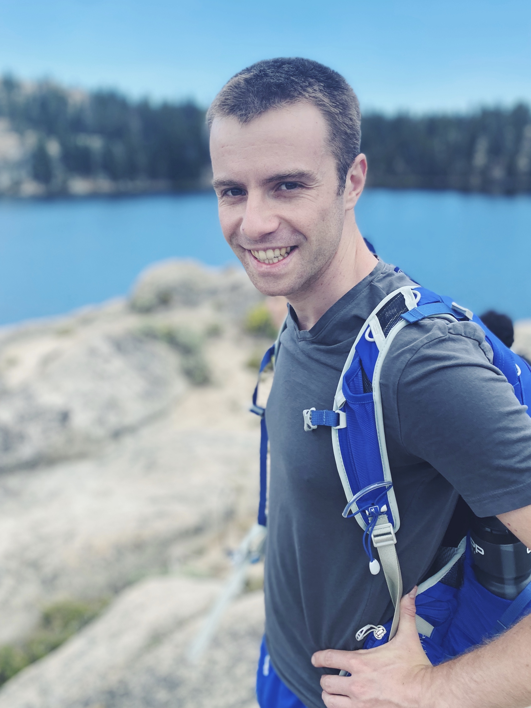

algorithms, theoretical machine learning, semidefinite programming, sum of squares optimization, convex hierarchies, bicycles. he/him.
I am a Miller fellow in the theory group at UC Berkeley, where I am hosted by Prasad Raghavendra and Luca Trevisan. Before that, I got my PhD at Cornell, advised by David Steurer.
In the 2021-2022 academic year I will join MIT as an Assistant Professor in the Department of Electrical Engineering and Computer Science.
If you are interested in working with me as a PhD student, please apply to MIT’s EECS PhD program!
For more, see all publications.
Robustly Learning any Clusterable Mixture of Gaussians. Ilias Diakonikolas, Samuel B. Hopkins, Daniel Kane, Sushrut Karmalkar. FOCS 2020. arxiv (Conference version to be merged with this paper.)
Subexponential LPs Approximate Max-Cut. Samuel B. Hopkins, Tselil Schramm, Luca Trevisan. FOCS 2020. arxiv
Algorithms for Heavy-Tailed Statistics: Regression, Covariance Estimation, and Beyond. Yeshwanth Cherapanamjeri, Samuel B. Hopkins, Tarun Kathuria, Prasad Raghavendra, Nilesh Tripuraneni. STOC 2020. arxiv
Quantum Entropy Scoring for Fast Robust Mean Estimation and Improved Outlier Detection. Yihe Dong, Samuel B. Hopkins, Jerry Li. NeurIPS 2019, Spotlight Presentation. arxiv code
Mean Estimation with Sub-Gaussian Rates in Polynomial Time. Samuel B. Hopkins. Annals of Statistics, to appear. arxiv talk (MIFODS seminar)
Statistical Inference and the Sum of Squares Method. Samuel B. Hopkins. Dissertation. Recipient of Cornell CS Doctoral Dissertation Award. pdf
Mixture Models, Robustness, and Sum of Squares Proofs. Samuel B. Hopkins, Jerry Li. STOC 2018. arxiv talk 1 (BIRS) talk 2 (STOC)
The power of SoS for detecting hidden structures. Samuel B. Hopkins, Pravesh K. Kothari, Aaron Potechin, Prasad Raghavendra, Tselil Schramm, David Steurer. FOCS 2017. arxiv
Efficient Bayesian estimation from few samples: community detection and related problems. Samuel B. Hopkins, David Steurer. FOCS 2017. arxiv
A nearly tight sum-of-squares lower bound for the planted clique problem. Boaz Barak, Samuel B. Hopkins, Jonathan Kelner, Pravesh K. Kothari, Ankur Moitra, Aaron Potechin. FOCS 2016, inivted to special issue. arxiv video slides (pdf)
Fast spectral algorithms from sum-of-squares proofs: tensor decomposition and planted sparse vectors. Samuel B. Hopkins, Tselil Schramm, Jonathan Shi, David Steurer. STOC 2016. arxiv slides (pptx)
Blog posts I wrote on clustering and learning high-dimensional mixture models using the SoS method (originally appeared on Windows on Theory. pdf
Notes on tensor decomposition using the SoS method (originally notes for a guest lecture at Stanford). pdf
A short general-audience video about my research. youtube
Slides from a high-level introduction to SoS for cryptographers, from this workshop. slides (pptx)
PC Member: RANDOM 2020, ITCS 2021
Currently I am supported by the Miller Fellowship at UC Berkeley. In the past, I have received support from by Microsoft PhD Fellowship, an NSF Graduate Research Fellowship, and a Cornell University Fellowship.
I am Samuel B. Hopkins. Maybe you are looking for Samuel Francis Hopkins?
6th Floor, Soda Hall
hopkins at berkeley.edu
{kind=link}
{kind=link}
{kind=link}
{kind=link}